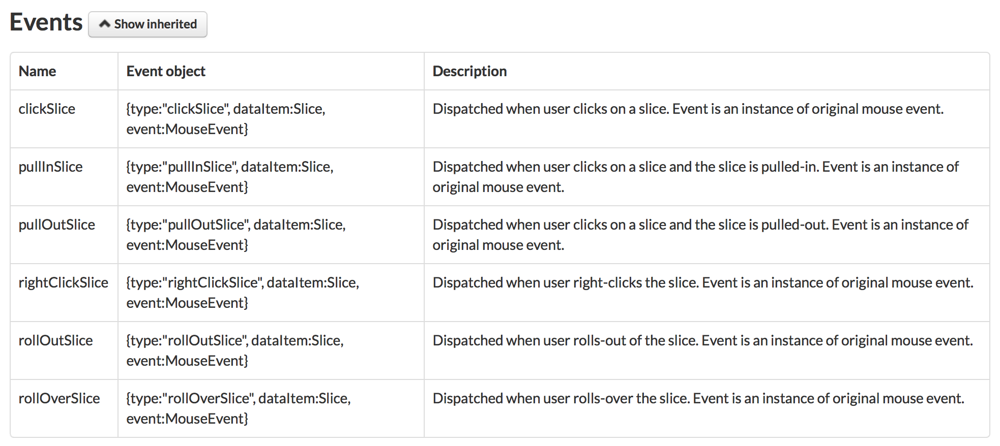

All the features presented here consist in convert JS into R. The most important thing to remember is that JS array and JS objects have to be passed as basic R lists.
Custom export
The library allows to export any chart in formats:
- “.png”
- “.svg”
- “.jpg”
- “.pdf”
Besides, you can also export the dataProvider in formats:
- “.xlsx”
- “.csv”
- “.json”
If you want to add all these possibilities (and many more with annotate and print), the only thing you have to do is to set the property export:
data("data_gdp")
amPieChart(valueField = 'gdp', titleField = 'country',
dataProvider = data_gdp, startDuration = 0) %>>%
setLegend(position = "bottom", useMarkerColorForLabels = TRUE) %>>%
setExport(enabled = TRUE) %>>%
plot()By default, the chart will contains all the JS plugins for exporting, annotating, printing… If you don’t want all of these features you just have to customize the property “menu”:
Example 1
JS code for the menu:
"menu": [ {
"class": "export-main",
"menu": [
{"format": "JPG", "label": "Save as JPG", "title": "Export chart to JPG"},
{"format": "PNG", "label": "Save as PNG", "title": "Export chart to PNG"}
]
} ]R code:
menu_obj <- list(list(format = "JPG", label ="Save as JPG", title = "Export chart to JPG"),
list(format = "PNG", label ="Save as PNG", title = "Export chart to PNG"))
data("data_gdp")
amPieChart(valueField = 'gdp', titleField = 'country',
dataProvider = data_gdp, startDuration = 0) %>>%
setLegend(position = "bottom", useMarkerColorForLabels = TRUE) %>>%
setExport(enabled = TRUE, menu = menu_obj) %>>%
plot()Example 2
JS code for the menu:
"menu": [ {
"class": "export-main",
"menu": [
{"label": "Download", "menu": [ "PNG", "JPG", "CSV" ]},
{"label": "Annotate",
"action": "draw",
"menu": [ { "class": "export-drawing", "menu": [ "PNG", "JPG" ] } ]
}
]
} ]R code for the menu:
menu_obj <- list(list(class = "export-main",
menu = list(
list(label = "Download", menu = list("PNG", "JPG", "CSV")),
list(label = "Annotate", action = "draw",
menu = list(list(class = "export-drawing", menu = list("PNG", "JPG"))))
)))
data("data_gdp")
amPieChart(valueField = 'gdp', titleField = 'country',
dataProvider = data_gdp, startDuration = 0) %>>%
setLegend(position = "bottom", useMarkerColorForLabels = TRUE) %>>%
setExport(enabled = TRUE, menu = menu_obj) %>>%
plot()For more information you can refer to the official documentation here.
Add event listeners
You can also increase the intercativity of your charts using the listeners. They are JS functions documented in each class of the library. Example with ‘AmPieChart’: 
For adding a listener, use the dedicated function addListener() and pass the JS function as a character string:
amPieChart(valueField = 'gdp', titleField = 'country',
dataProvider = data_gdp, startDuration = 0) %>>%
setLegend(position = "bottom", useMarkerColorForLabels = TRUE) %>>%
addListener(name = "clickSlice", expression = paste("function (event) {",
"var obj = event.dataItem;",
"alert('The value is: ' + obj.value);",
"}")) %>>%
plot()